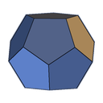

Builds at a glance
Both ability bars as the game's icons, scribed skills with their scripts, every set with its piece count. Click a name for the gear slot by slot: set, trait, enchant, quality, mundus stone, food and Class Mastery passives.

Live fight summaries from your Elder Scrolls Online encounter log. The moment combat ends, see who was in the group, how each player was built, and how they performed.
Also: portable zip · Linux tarball (experimental) · release notes · all releases · source on GitHub. Free and open source under the MIT License.
{{beta_line}}
Everything comes from the game's own Encounter.log. Nothing is sent anywhere; the app only reads the file as the game writes it.
Both ability bars as the game's icons, scribed skills with their scripts, every set with its piece count. Click a name for the gear slot by slot: set, trait, enchant, quality, mundus stone, food and Class Mastery passives.

Boss DPS beside total DPS, each over its dps time, with pets and damage-over-time ticks included. Click a player's figure for their damage by ability and by target.

Click the group's DPS for a graph of everyone's dps across the fight, so a bad pull or a lost burn window is seen, not guessed at.

A ☠ on a player's row opens the last five seconds before each death (up to ten in Settings): every hit and heal with its source, the health left after it, and whether it was blocked, dodged or shielded.

A shield after every name opens the whole fight for that player, died or not: damage taken per second of the fight, what shields absorbed, how many direct hits were blocked, then every unit that hurt them with its abilities (bosses first, adds of one name as one row) and every healer with theirs, overheal as a share. Built for tanks; works for anyone.

A strip across every fight, buffs above and debuffs below, one row per effect with its uptime. An expected buff that never came reads 0% in red. Rows are plain-text rules: edit them, add any effect the log carries, paste HyperTools trackers, or pick from the Examples list.

Where each player's penetration and critical damage come from: passives, mundus, sets at their piece counts, weapons, and the debuffs the group put on the boss, summed against the caps at full uptime and as the fight actually went.

A glowing ⓘ after a player's name flags a build worth a look: a tank with no taunt, a set that does nothing in this fight, a healer without a restoration staff. Hover for the list, click for the rule behind each finding.

Ctrl+F finds a player, a set or an ability within the fight, icons included. Copy any fight as plain text for Discord, and hover an icon or click a set name for its ESO-Hub page.

Open an older log or a split file without interrupting live monitoring. Per-encounter split files, automatic archiving and a freshness indicator keep the ever-growing log in hand, and the app replays the session when you start mid-raid.
The game writes Encounter.log only while logging is on, and it is off by default. The Easy Stalking - Encounterlog addon turns it on for you by content type; by hand, type /encounterlog in chat before a run.
Run the installer; no administrator rights are needed. If Windows SmartScreen says "unknown publisher", choose More info → Run anyway: the installer is not code-signed. Or unpack the portable zip anywhere. On Linux, unpack the tarball and run esolog-gui.
Start the app before or during play; it finds the log on its own. The status bar's Last entry turns green while the log is being written, and each fight appears as combat ends. The user guide takes it from there.